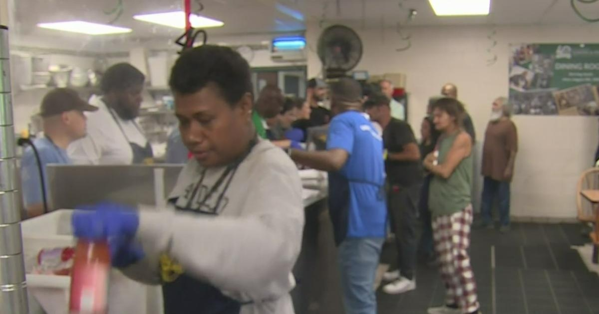

Loaves and Fishes in Sacramento expecting to serve Thanksgiving dinner to 700 to 1,000 guests this yearSACRAMENTO - For 40 years, Loaves and Fishes in Sacramento has been a place where people can go for some help and a hot meal. This Thanksgiving will be no different, as the organization expects hundreds to walk through their doors. CBS13 spoke to the man who's cooking up all the food and how he got there. For years, Loaves and Fishes has been the place people can count on more than just a hot plate. "I'm expecting, I'd say, at least about 700, probably more," said Chef Edwin Burton. Burton knows the power one simple meal can have. CBS13: "How did you get involved with this organization?" Burton: "Well, I was a guest first." And years later, Burton's now the head chef, giving special detail to their annual Thanksgiving meal. "I worked my way up, and I enjoy what I do," he said. Loaves and Fishes has it all this year: "Turkey, stuffing, mashed potatoes, gravy, green beans, rolls, pies, cranberry sauce," Burton said. And they're prepared for anywhere from 700 to 1,000 people, and lately, they've noticed more people needing help. "We're watching...of our numbers rise again. It kind of ebbs and flows a little bit throughout the month," said Loaves and Fishes' Executive Director Angela Hassell. "We're seeing more and more people coming down and needing our services." Hassell says that for a lot of people they serve, Loaves and Fishes is all they have. "This is one of the places in this world where they feel accepted and welcomed and comforted, and we want this holiday to be just like it is for anybody else who's able to have a family and celebrate with their family at home," she said. And they try to make everything perfect, right down to having a wide range of pies, so people can tell them what they want. Who knows, that small gesture could inspire the next Edwin Burton. "It feels like a small thing, but rather than kind of a 'here's what we have, here's what you get,' they get the chance to say what they want, and we get to give it to them," said Hassell. Loaves and Fishes will be serving food on Tuesday, from 11 a.m. to 1 p.m. at their location off North C Street in Sacramento. for more features. |
 |